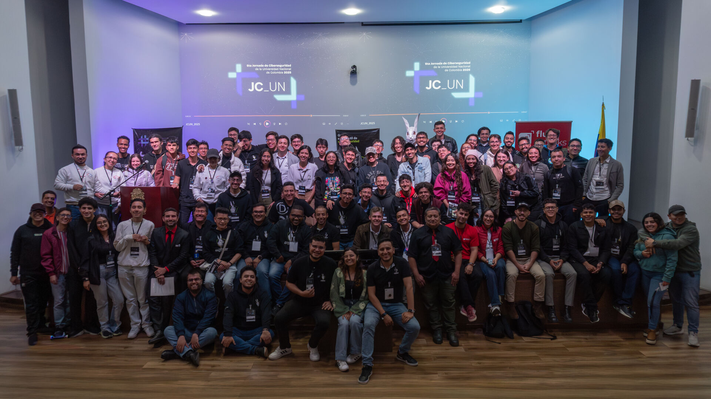
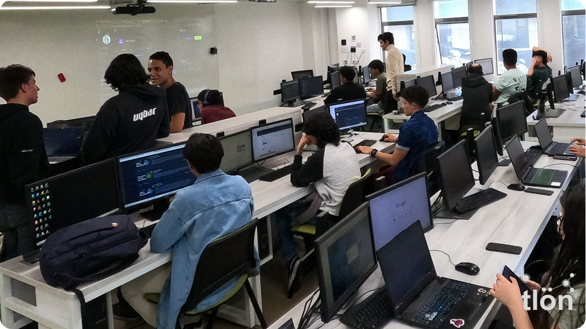
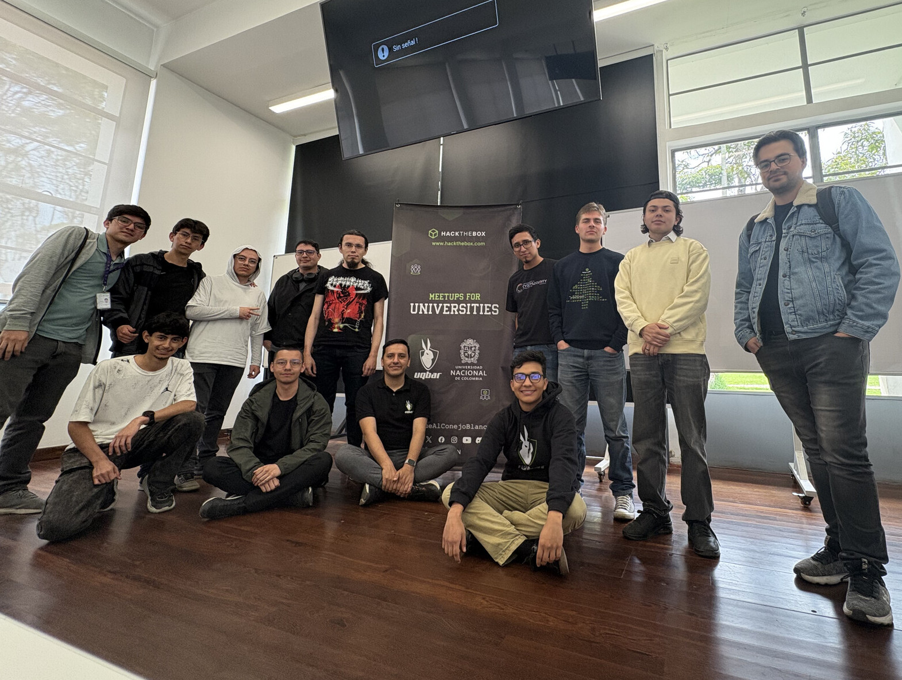

Uqbar
Impulsamos la formación práctica en ciberseguridad mediante talleres, laboratorios, retos CTF y
espacios de discusión técnica abiertos a estudiantes de la Universidad Nacional de Colombia.
Trabajamos desde una perspectiva ética, colaborativa y educativa para fortalecer habilidades ofensivas,
defensivas y forenses aplicadas a escenarios reales de seguridad informática.
"Los espejos y la paternidad son abominables porque multiplican el número de los hombres."
Jorge Luis Borges, Ficciones

Al servicio del conocimiento
Nuestras actividades abordan temas clave como hacking web, pentesting, seguridad defensiva, análisis
forense, redes y preparación para competencias CTF.
Desde uqbar conectamos teoría y práctica, formando talento humano y promoviendo una cultura de seguridad
ética dentro de la comunidad universitaria.


Aprendizaje práctico y comunidad
Defendemos que la ciberseguridad se aprende practicando con responsabilidad: documentando hallazgos,
entendiendo el riesgo
y compartiendo conocimiento de forma ética.
Impulsamos sesiones como "De Junior a Senior en Hacking", laboratorios guiados y preparación para
plataformas de práctica.
Somos organizadores del JCUN: el evento académico más importante en ciberseguridad de Colombia, organizando competencias CTF nacionales e internacionales, y siempre manteniendo un
vínculo académico con el mundo de TLÖN sin perder nuestro enfoque académico.